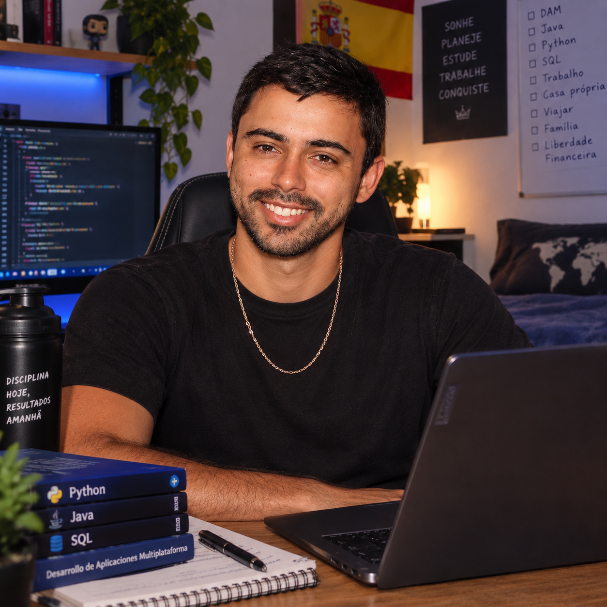

Python sigue en lo más alto del índice TIOBE
En el índice TIOBE de septiembre de 2026 el top 10 no cambia: Python mantiene el primer puesto, aunque su popularidad baja del 18 %, y C++ amplía su ventaja sobre Java.
Administrador, alumno y programador. Soy brasileño, vivo en Valencia y me estoy formando en CEAC Valencia para unir mi experiencia en gestión con el desarrollo de software.
Hablemos →
La informática ha pasado de ser una herramienta de oficina a convertirse en la base de casi todo lo que hacemos: trabajar, estudiar, comunicarnos y gestionar nuestra vida diaria. Hoy la inteligencia artificial (IA) da un paso más, porque ya no solo ejecuta instrucciones, sino que ayuda a escribir código, analizar datos y tomar decisiones.
Creo que la IA no sustituye a las personas que saben programar, sino que multiplica lo que pueden hacer. Por eso es más importante que nunca entender los fundamentos: saber cómo funciona un programa, revisar lo que genera una máquina y usar la tecnología con criterio y responsabilidad. Aprender informática hoy no es solo aprender un lenguaje, es aprender a pensar, a resolver problemas y a adaptarse a un cambio constante.
Me dedico a la administración y a la tecnología. Soy brasileño, vivo en España y actualmente estudio en CEAC Valencia, donde me estoy formando como programador para unir mi experiencia en gestión con el desarrollo de software.
En el índice TIOBE de septiembre de 2026 el top 10 no cambia: Python mantiene el primer puesto, aunque su popularidad baja del 18 %, y C++ amplía su ventaja sobre Java.
Rust entró por primera vez en el top 10 de TIOBE en julio de 2026 y se ha mantenido en el puesto 10, subiendo su índice del 1,34 % al 1,45 % en agosto. Es uno de los lenguajes que más crece por su seguridad en la gestión de memoria.
El lenguaje Julia alcanzó el puesto 21 en el índice de septiembre de 2026, gracias a su uso creciente en computación científica, modelado y procesamiento de datos, mientras MATLAB sigue perdiendo posiciones.
La comunidad KDE está en el centro de la conversación por una propuesta para definir una política oficial sobre el uso de modelos de lenguaje (LLM) en sus proyectos. El debate muestra que la IA ya forma parte del día a día de los programadores.
Microsoft ha presentado Project Zenith, un entorno de Windows listo para programar, con herramientas preconfiguradas y soporte para IA local en el propio ordenador del desarrollador.
Si quieres contactar conmigo, puedes escribirme: